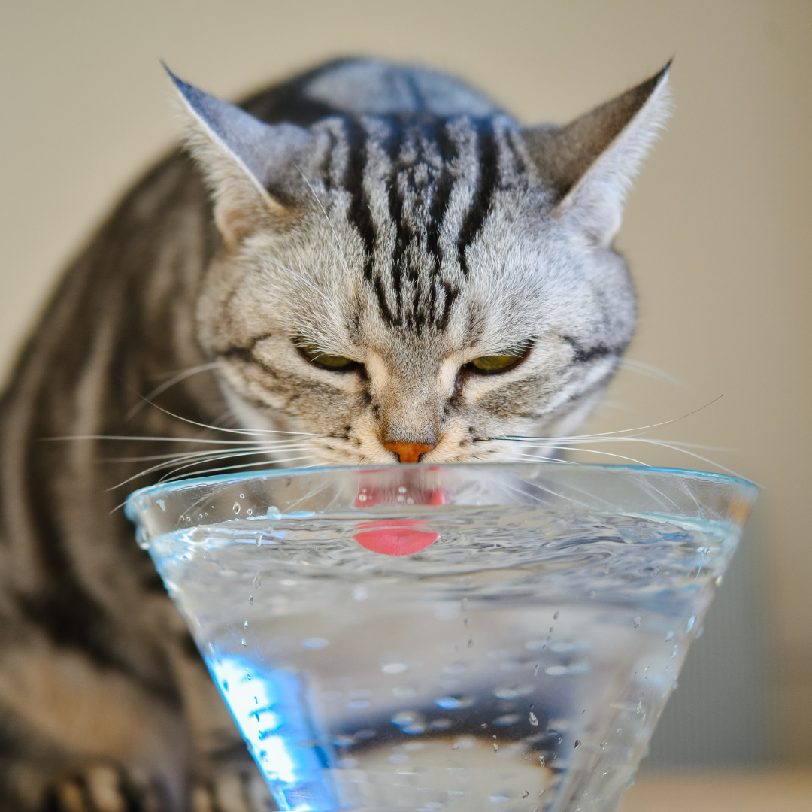

Blog
Conseils, prévention et actualités du cabinet.
Un nouvel article chaque semaine, écrit par l'équipe du Cabinet Vétérinaire de Gruissan.
Derniers articles
À lire avant votre prochaine visite.

Prévention
Épillets de graminées : le danger méconnu de l'été pour chiens et chats à Gruissan
En été, les épillets de graminées se glissent dans les pattes, oreilles, yeux et nez des animaux et migrent en profondeur. Signes à reconnaître et réflexes d'urgence.

Prévention
Canicule à Gruissan : comment protéger votre chien ou votre chat pendant les fortes chaleurs
En été, les chiens et les chats peuvent souffrir rapidement de la chaleur. Découvrez les bons réflexes, les erreurs à éviter et les signes d'alerte à surveiller à Gruissan.

Prévention
Épillets à Gruissan : pourquoi faut-il les surveiller chez le chien et le chat ?
Où les épillets se logent, quels signes surveiller après une balade et quand consulter — le guide complet du Cabinet Vétérinaire de Gruissan.

Conseils
En vacances à Gruissan avec votre animal : les bons réflexes avant et pendant le séjour
Identification, antiparasitaires, chaleur, épillets, transport… quelques vérifications simples pour partir serein à Gruissan avec votre chien ou votre chat.